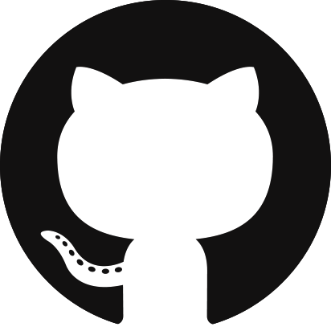
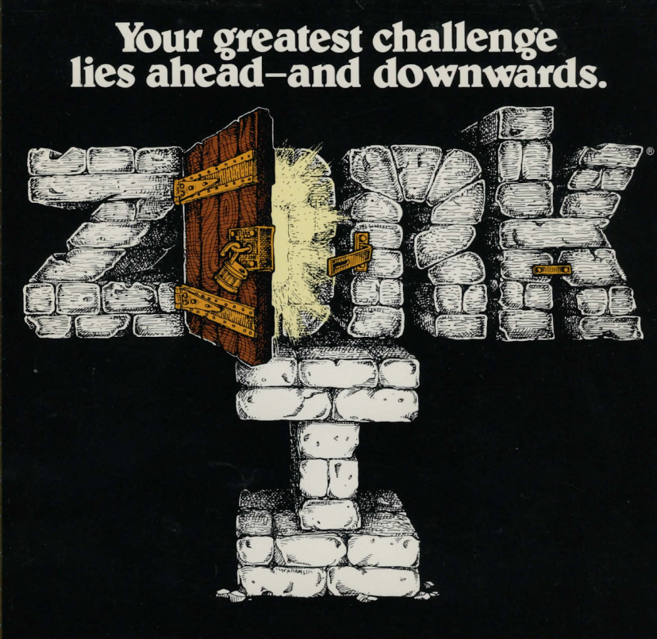
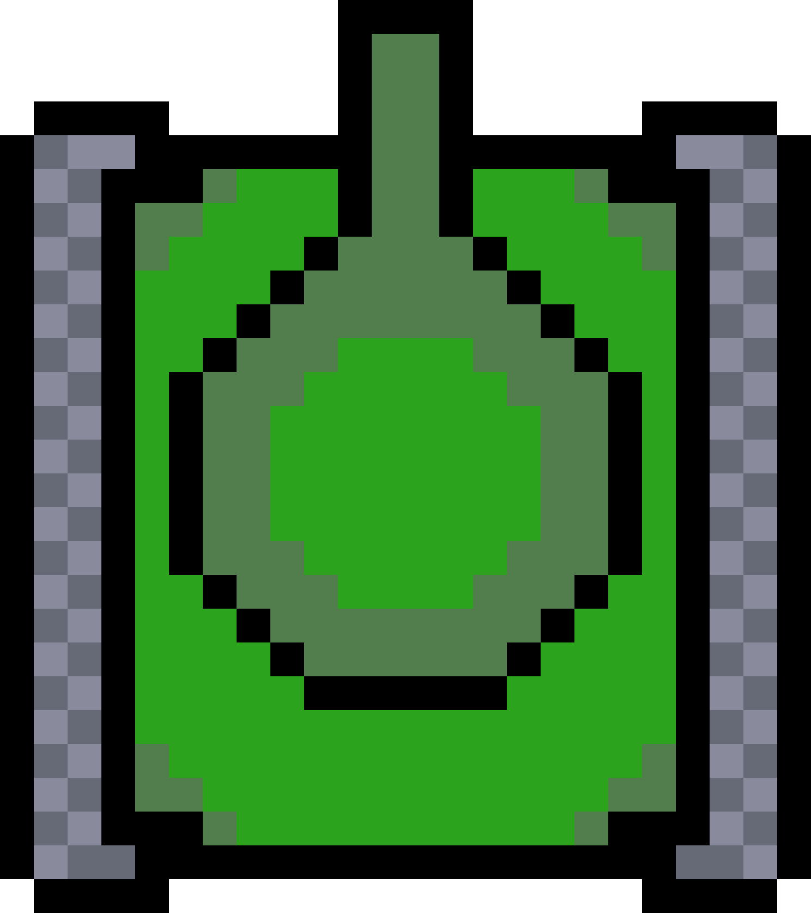
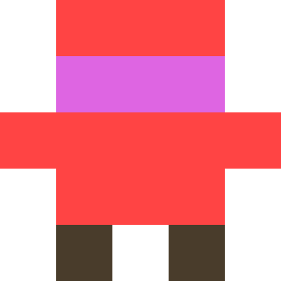
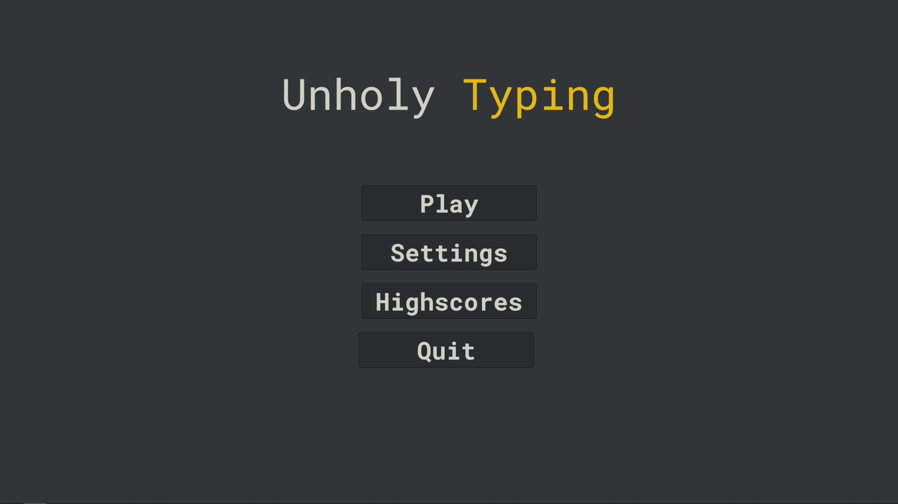
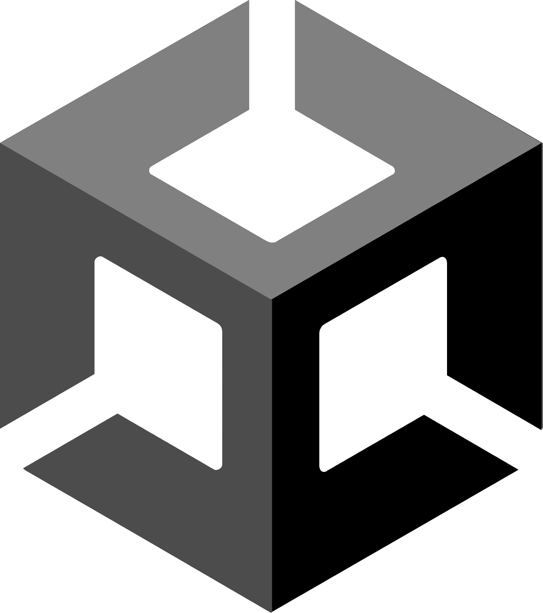
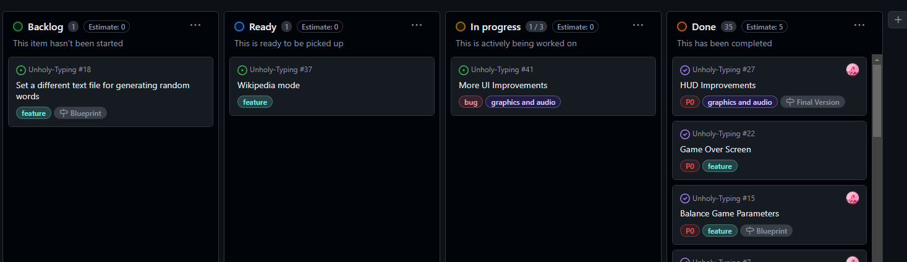
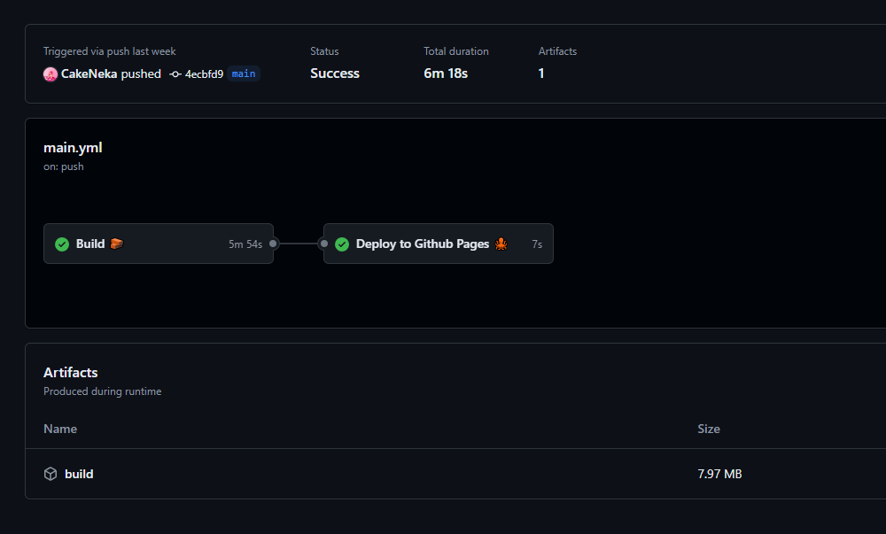
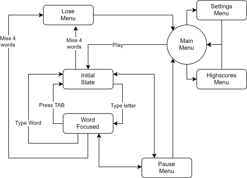

Unholy Typing
Por Martina Victoria


Índice
- Introducción
- Herramientas
- Planificación
- Detalles del desarrollo
- Demostración
- Conclusiones
Introducción
Posibles Propuestas
1. Aventura basada en texto

- Juego similar a ZORK
- Se juega escribiendo en una terminal
Desventajas:
- Más dificil de lo que parece
- Complicado de entender y poco visual
2. Juego de PMDMO

- Continuación del juego desarrollado para el módulo de PMDMO
- Controlas a un tanque que dispara automáticamente
3. Heroes of Sokoban

- Este sí que lo hice :)
- No me parece buena idea para proyecto porque es un clon
Elección final
Juego de mecanografía

Decidí hacer un juego de mecanografía porque me gusta mucho la mecanografía.

Herramientas



Unity
- Motor de videojuegos 2D y 3D, el más popular para el desarrollo independiente
- Experiencia previa
- Editor gráfico
- Utiliza C# para scripts
C#
- Lenguaje orientado a objetos muy similar a Java pero con características más modernas
- Desarrollado por Microsoft
Git y GitHub
- Especialmente útil en proyectos colaborativos
- Es importante utilizar control de versiones en cualquier proyecto
- Con GitHub tienes otras herramientas (pages, actions, projects) que complementan a git
reveal.js
- Para construir presentaciones con HTML y CSS
- Por lo general muy útil, además quedan presentaciones bonitas aún dedicando poco tiempo
- Pueden surgir complicaciones un poco absurdas
Planificación
Se ha utilizado GitHub Projects para la planificación del proyecto.

Detalles del desarrollo
Tiempo invertido
- Desarrollo
- Documentación
- Presentación
- Total
41h*
10h
7h
58h
10h
7h
58h
GitHub Actions y GitHub Pages

Detalles del código
Patrones de diseño
public static GameManager Instance { get; private set; }
private void Awake() {
if (Instance != null && Instance != this) {
Destroy(this);
} else {
Instance = this;
}
}
public float AverageCPM {
get {
if (typedWords.Count() == 0)
return defaultTypingSpeed;
return CalculateTypingSpeed(
typedWords.Select(c => c.word.Count()).Sum(),
typedWords.Select(c => c.seconds).Sum()
);
}
}
Single Responsability Principle
public class ScoreCalculator {
public int CurrentScore { get; private set; }
public void WordTyped(WordCPM wordCPM, float averageCPMLast10) {
GameManager gm = GameManager.Instance;
int perfectBonus = gm.config.perfectWordBonus;
int pointsPerCharacter = gm.config.pointsPerCharacter;
float cpmMultiplier = gm.getCPMScoreMultiplier(averageCPMLast10);
float wordAccuracy = (float)wordCPM.word.Count() /
(wordCPM.word.Count() + wordCPM.misses);
CurrentScore += (int)(wordCPM.word.Count() * pointsPerCharacter
* cpmMultiplier * wordAccuracy);
CurrentScore += wordAccuracy == 1f ? perfectBonus : 0;
}
}
Diagrama de flujo

Conclusiones
- Conceptos aprendidos
- Posibles mejoras